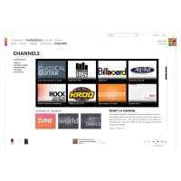

Cutting the Cord: Zune 3.0 Offers Downloads From the Airwaves
Evolving platform continues to offer new ways to connect with new music, media and the community, anywhere, anytime.
By Microsoft Corporation, Published 16th September 2008
REDMOND, Wash. - Sept 16, 2008 This week the Zune music and media service comes out with a host of hardware and software upgrades that gives fans more ways to connect with new music. Out in time for the holidays, Zune 3.0 features both the usual and the unusual.
Under the "usual" category, the device itself is stepping up, with the premium Zune player now offering 120 GBs of space. The headroom for the smaller flash devices will also double, up to 16 GBs. And the flash devices will be available for the first time in blue. Beyond those upgrades, the hardware itself won't change much, with Microsoft instead focusing on the software that powers the players.
According to Brian Seitz, group marketing manager for Zune, the device doesn't have to change much because its initial design created a platform for Microsoft to do what it does best - build software.
Which brings us to the unusual. The 3.0 release of the Zune service takes advantage of the device's wireless capabilities, its FM tuner, the Zune social network, and the Zune Marketplace to create a sweeping set of new offerings that Zune's growing fan base can really sink their teeth into.
"The new frontier for personal media players is the software," Seitz says. "We made an early bet with the FM player and wireless capabilities of the device. Now we can build on those hardware features by delivering great software. That's what we're doing with the 3.0 update."
A Clear Channel from Discovery to Purchase
In a groundbreaking move, the 3.0 release makes the Zune's FM tuner more interactive by using the RDS and RT+ information feeds that are used in the signal of most radio stations — Zune can now match that information with Marketplace, allowing users to click any song they hear to instantly tag and purchase it, or download it through their Zune Pass subscription.
If the Zune is in a recognized Wi-Fi hotspot, the song will immediately download. If not, a queue of songs will be ready to download when the Zune is next connected, either physically or wirelessly.
According to Jeff Littlejohn, executive vice president for distribution development at Clear Channel Radio, the new functionality from Zune comes at a perfect time for radio stations worldwide, as they seek new ways to distribute content of all kinds. Radio reaches more than 200 million people every week, and studies show that more than half of new music discovery still happens via FM stations.
"People spend a lot of time with radio," says Littlejohn. "This Zune technology puts two things together that have been dying to get together for years - discovery of new music on FM radio and the purchase of music, which is getting to be more and more digital."
According to Littlejohn and others in the broadcasting industry, putting those two things together creates the instant gratification that really compels consumers.
"To hear a new song on the radio and then purchase that song and own it within minutes is a pretty magical consumer experience I think," he says. "We're making FM radio interactive. It’s exciting for broadcasters, for consumer-electronics providers and, of course, for consumers, which is the most important."
Zune's Buy from FM functionality will work with any RDS or RT+ information feed from any radio station in the United States. Clear Channel alone will have more than 450 stations enabled for RDS feeds on the day Zune's functionality goes live, and the company is also working with other broadcasters to standardize the feeds and improve the customer experience.
"We see this as an industry coalition," he says. "This needs to be ubiquitous to reach its potential, and Zune brings so much depth to the game, since it's so connected and focused on the listener."
Musical Discovery Through Social and Marketplace Services
Beyond integration with FM radio, the 3.0 release adds a number of other ways to discover new music on the go. Zune's own studies have shown that people's friends rank along with FM radio as tops in musical discovery, and the team has used that principle to guide many of the 3.0 updates. Listeners can now update their Zune Cards wirelessly, whenever they're connected to a Wi-Fi network, giving their friends up-to-the-minute access to what they're listening to.
The Zune Marketplace is also now available on the go — users can now shop for new music right from their device through a Marketplace tab on the menu screen. To help simplify navigation for mobile users, the tab will initially take them to top songs and recommendations from the Zune editorial staff. If you are a Zune Pass subscriber and in a Wi-Fi network, you can stream from the Marketplace straight to the device.
"If you're looking for music and don't have anything in mind, here's a great place to start," Seitz says. "You can search for an artist and download anything from the marketplace, but we also have this great editorial team plugged into the industry, and we're finding ways to plug them into the community too."
Zune Marketplace Managing Editor Emily Griffin leads a team of five music experts covering everything from rock and pop and hip hop and R&B to world music and classical, including dozens of subgenres. Her team also handles relations with record labels, from the majors down to the indies. Griffin says her team is happy to connect Zune listeners with its knowledge of music and the music industry.
"We're like those clerks who are always in the store," she says. "It's our job to curate and bring out the best of the store, and we're always looking at what's there, what's coming in, and how we can slice and dice the catalogue to come up with interesting playlists and special features, so that people can get turned onto something."
One new form of playlist coming out this fall will be "Channels," a hybrid between a playlist and a podcast, to which users can subscribe.
The Channels will come from a number of name brands, such as Billboard Top 100 chart, Fader, KROQ in Los Angeles and KEXP in Seattle. The Channels will be updated on a weekly basis. There will also be genre-oriented channels programmed by the Zune editors, as well as channels automatically personalised to users as they listen and rate music. For the 3.0 release, the Zune editors are also offering new "collections" that give Zune Pass subscribers instant access to dozens of top songs in a particular genre.
The $14.99 a month Zune Pass takes these new offerings to another level. With a Zune Pass subscription, there's no need for users to worry about whether to buy a song, or buy an entire album. All the music on the Zune Marketplace is available all the time. If a user is in a Wi-Fi hotspot, any song can be downloaded or streamed immediately to the device.
"Collections are essentially playlists that have 100, 200 plus tracks in them," Griffin says. "But if you have the Zune Pass, because it's a subscription, you're not plunking down $100, $200 for it. You can instantly have a great 70s soul pop collection, or a great hip hop collection or a dance hits collection."
According to Griffin, everything her team does reinforces the traditional "record store" philosophy of Zune.
"It's not just a computer telling you what it thinks you're going to like," she says. "It's actually people who are here to help you build a solid collection. We’re also upping the ante in terms of the aesthetic experience of record buying, which has been lost in a big way since it's gone online. We’re bringing back that record store experience."
Engaging and Functional Design Enhancements
Another way Zune 3.0 connects users with music is via new browsing and search functionality integrated with visual elements. The new design includes compelling features such as the "Mixview," which provides a relational display mapping artists to their influences, related artists and power listeners. Each related picture provides additional information, and can become the centre of the "map" with a single click. There's also the new "Picks" page, which presents recommendations based on unique data from each listener.
"This is a dynamic view of related content that creates a deep experience to explore music," Seitz says. "This takes the 'related' page links and creates a much more elegant and visual way to interact with your collection, with the music in the Zune Marketplace, plus the data that's coming out of Zune Social. If you start with an artist or a track that you love, it's easy to jump off from there and find a bunch of other stuff you're going to like."
Other graphical enhancements have been made to the album views that display while Zune is playing on a computer not directly in use, and they've been made functional too, allowing users to navigate through the view into their collections. The service will also offer views that provide bio information and high res imagery in full "bleed" for that screen-saver look.
Beyond the appealing redesign, Zune is also offering more fundamental enhancements such as improved search capabilities with auto-complete suggestions, filters to help users navigate, the ability to search for Zune social members and channels, and new media types.
Other New Features - It's About Time
One new media type that Zune is adding this time around is support for audiobooks. Although audiobooks won't be sold on the Zune marketplace, Zune will be an available option through Audible.com, a leading purveyor of audio books, as well as through OverDrive-powered Web sites, an infrastructure provider for major booksellers and library systems.
"Now you'll be able to integrate your Zune with libraries," Seitz says. “The Seattle and King County library systems, for example, offer loaner audiobooks. Now Zune customers can put them on their Zune for free."
Also on the device, the first steps toward another major media segment — games. The device will now offer Hexic, a popular puzzle game, as well as Texas Hold 'em style poker.
With all those new features and services, one might think the team has done enough this year to improve the Zune experience, but according to Seitz, there's one more feature that Zune users have been asking for, and with 3.0, they're getting it.
"A clock," he says. "Not a huge deal, but a lot of people have been itching for a clock since day one, and we're excited to get it in there with this release."
At the same time, other new experiences, such as the Buy from FM functionality and the new Wireless Marketplace, show how the Zune platform is maturing. And the best part of all, according to Seitz, is that all the features are available for all Zune customers, for free.
"We want people to understand the power of this release and the power of the software to unlock new capabilities in the hardware," Seitz says. "These features just work. Whether you stood in line for a Zune 30 on day one, or are looking to get into the Zune community with a new device today, all these features are there for you."